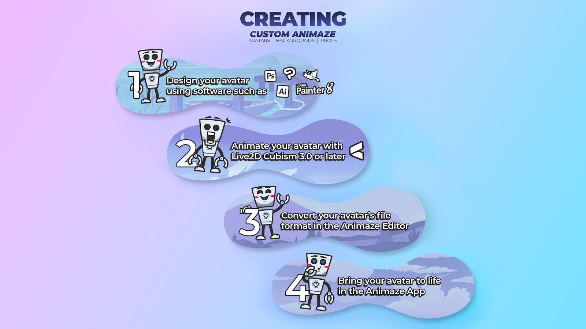

Animazeとは何か？
Animazeアプリでは、素敵なキャラクターをデジタルで具現化し、写真や動画をTwitchやInstagram、TikTokなどのプラットフォームで共有したり配信したりすることができます！Animazeアプリは無料です。AnimazeデスクトップアプリはSteamで、AnimazeのiPhone用アプリはApp Storeからインストールできます。
私たちは、このデジタルの「シェイプシフト」体験は楽しく、コミュニケーション、配信、ストーリーテリングなどに最適であり、オープンスタンダードで高品質、アクセスがしやすく、用途が広いものであるべきだと考えています。
Animazeソフトウェアとオープンな.avatar形式はその使命を支援するためにあります。アバターコミュニケーションワールドでのあなたの旅の手助けのために、私達はAnimazeエディターも製作しました。このソフトウェアであなた自身の創作物をAnimazeアプリに加え、あなた自身のアバターを好きなように使用することができます。
私たちは、すべてのキャラクター制作者（3Dアーティスト、2Dアーティスト、大小のスタジオ）に力を与え、彼らの作品を生き生きとしたものにし、同時に支援もしたいと考えています。そこで、Animazeの説明書とツールのセットを作成して、この新しい形のデジタルインタラクションとオープンな.avatar形式をサポートします。既存の説明書ではカバーされていない特定のトピックがあるようでしたら、どのトピックをカバーして欲しいのかをお書き添えのうえ、お気軽にsupport [@] animaze [.] usまでお問い合わせください！
当社の技術アニメーターとエンジニアは、最高のアバターのエンボディメント体験を提供する方法を常に模索しており、時折新しく改良を加えた.avatarの標準をアップデートします。
.avatar形式はアバターコンテンツの多数の種類に使用可能
-
アバター（複数の種類）
3Dキャラクター（一般的な3D作成パッケージを使用）
2Dキャラクター（Live2D技術を使用）
ハイブリッドキャラクター（3Dと2Dの組み合わせ）
3Dアバターの小道具 – メガネ、帽子などキャラクターに使用できる楽しいアクセサリ
-
背景/バックドロップ
360度のパノラマ（「スカイボックス」）
2Dの写真の背景
動画フィードの背景（FMV）
完全に実現された3Dシーンのパーティクル・システム
